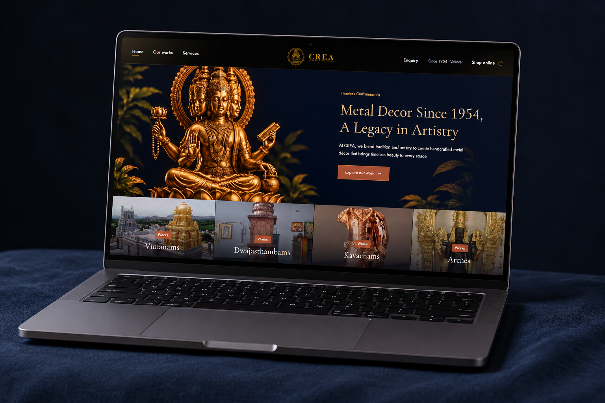

Approval is not validation
A happy client is a good sign. A convinced stranger is the proof.
CREA has been casting temple metalwork in Vellore since 1954, and almost nobody outside those temples knew. I designed the website to make a stranger believe in seven decades of work in one scroll, by showing the paperwork instead of claiming a legacy.
A four-page static website for CREA Luxury Metal Decor LLP: Home, Works, Services and Enquiry. The second round was designed and built in one week, after the client had already approved a first version. Metrics and results are not claimed here because none were recorded. Where a fact was unconfirmed, the site says “Details on request”.
Solo designer and developer, end to end: research and content audit, information architecture, brand storytelling, UX writing, visual and interaction design, and the working build packaged as one shareable file.

Three generations of temple metalwork.
Home, Works, Services, Enquiry.
Redesigned and built solo with AI.
From client-approved to user-trusted.
CREA has been casting and hand-chasing temple metalwork in Vellore since 1954. Three generations of one Vishwakarma family have worked on vimanams, dwajasthambams and kavachams that stand in temples across South India, including Tirumala. Almost nobody outside those temples knew.
The brief was simple to say and hard to do: make a stranger believe in seven decades of work in the time it takes to scroll one page.
The answer was to stop claiming a legacy and start showing the paperwork. The website opens with the year 1954, explains where the logo came from, and puts newspaper clippings, appreciation certificates and per-project records in front of the visitor, so trust is built from evidence and not from adjectives.
“Trust is not a tone of voice. It is a pile of proof, arranged so a stranger can walk through it.”
I worked on this project end to end, as designer and developer: research and content audit, information architecture, brand storytelling, UX writing, visual and interaction design, and the working four-page build, packaged as one shareable file.
A temple trustee in another state is looking for a team to build a gold-clad vimanam. They find a few websites, and all of them say the same thing: “trusted,” “premium,” “handcrafted.”
CREA’s reputation lived in places the internet can’t see: temple records, old certificates, a 1998 newspaper report, the memory of priests and trustees. A brand with three generations of work looked, online, like a brand that had just started.
Temple commissions are not impulse purchases. The people who decide are trustees, executive officers, architects and donors, spending a community’s money on something worshippers will touch for decades. For them, a wrong choice is a public failure.
“Our visitors are not asking ‘is this beautiful?’ They are asking ‘is it safe to trust these people with something sacred?’”
Every brand site says “we have been doing this for years,” and a visitor can’t check. But CREA had a paper trail: certificates from Tirupati Devasthanams dated 1956 and 1957, a Dinamalar report from 16 July 1998, a Heritage Today feature from July 2024, and a record for each project. The job changed from “write better marketing copy” to “curate the archive and design the walk through it.”
I don’t stop when the client says yes. I stop when a stranger understands, believes and acts. I design as a designer, test as a user, and question myself like a sceptic, and I repeat that loop until the design earns trust rather than approval. Because I design and build the product myself, with AI tools that let me move fast, I can afford to change my mind as many times as the problem needs.
“Designers see problems in the design. Users feel problems in the brand.”
Ask what the design must make a person believe or do, not what it should look like.
A weak first draft teaches nothing, because people react to its flaws and not its idea.
Family and friends who match the real audience. No explanation first, then four simple questions, then silence.
Half-sentences, pauses, small reactions. The messy notes are where the truth is.
List every doubt and make each one earn an answer.
Every change traces back to a user note or a doubt. Then back to step 3.
A happy client is a good sign. A convinced stranger is the proof.
Designers are too kind and too technical. Non-designers say plainly what they feel.
If a brand says it’s old or trusted, I look for what backs it up and design the proof to lead.
Where I don’t have a fact, I say so on the page. A visible “Details on request” beats an invented number.
I use AI as a sparring partner first and a production tool second. I ask it why might this fail?, what would a sceptical user think here? and is this a new idea or just a nicer version of the old one? When I’m torn between two directions, I make it argue both sides, then I decide. It never replaces the user test: it sharpens my thinking, and real people tell me whether the thinking is right.
No handoff gap, so what I design is what ships. Changes take minutes, not meetings. I keep full control over motion, performance and phone behaviour, and I can put a working prototype in front of real users within days.
The first version of the CREA website was visually outstanding. I showed it to the client and they were happy. In most projects, that is where the story ends.
But I couldn’t shake the feeling that the site was beautiful but not believing. It looked like a very nice brand website. It did not feel like a house that had worked in Tirumala since 1954. It projected CREA the way every competitor projects itself, selling the look of the metal rather than the weight of the history, and I was grading it with my own designer’s eyes.
“A client saying ‘I love it’ tells you the design is liked. It doesn’t tell you the design works.”
The client was satisfied. Asking for another version meant reopening approved work and risking a “why do we need to change it?” conversation. I asked anyway: if the site’s one job is to make strangers trust CREA, the stranger’s opinion is the test.
I took the design to family and friends who had never heard of a vimanam, with no explanation first, and asked four questions: What do you think this company does? How old is this business? Would you trust them with something important? What did you notice first? Then I stayed quiet and wrote everything down.
The notes pointed one way. People didn’t struggle with the design, they struggled with the belief:
| What I saw as a designer | What users felt |
|---|---|
| Strong spacing, hierarchy and rhythm | The age of the brand wasn’t obvious |
| Premium imagery | The legacy felt like a claim, not a fact |
| Proof present on the page | Nothing told them to look at it |
| A polished brand story | It didn’t feel personal or rooted |
I listed my doubts before opening the design tool, then took them to AI as a sceptical partner. It didn’t decide for me. It made me defend every decision.
| My doubt | What it led to |
|---|---|
| Is the history visible in five seconds? | “Since 1954” moved into the headline |
| Why should a stranger believe the claim? | Certificates, newspapers and project records became the main content |
| Is the logo just decoration? | The logo got its own story: the face of Brahma |
| What does a trustee ask before hiring? | Services, process and FAQ written around their real questions |
| Am I designing for the client’s taste or the visitor’s trust? | Every section answers a trust question or is cut |
Version two fixed the obvious things but still felt cautious. Version three is where the idea clicked: stop telling people CREA is old and start proving it, with the logo story, the timeline, the press clippings and a record for every project.
I designed and developed the entire second round alone, in one week. It is a static site, so there was no backend to slow it down, and AI tools took me from idea to working page without waiting on anyone. The speed matters because it allowed more rounds of design, test and rethink. I could change the design because it wasn’t expensive to make.
| Day | Focus |
|---|---|
| 1 | Review the notes. Define the real problem: trust, not looks |
| 2 | Rebuild the story structure and logo story |
| 3 | Redesign the home page around proof |
| 4 | Works, timeline and project records |
| 5 | Services, FAQ and enquiry |
| 6 | Test with real people again. Fix what confused them |
| 7 | Polish, package and share |
Three principles guided every decision, and each one came from the problem above.
No claim without evidence nearby. If the page says “since 1954,” the next thing on screen is the temple, certificate or clipping that backs it up.
Dark, warm backgrounds like a sanctum, gold line-work like hand-chased metal, and generous space. Temple work is not loud. It is patient.
History is treated as a working record, not a museum. Old roots, current standards, documented projects and a clear enquiry process.
A gallery says “look.” A record says “verify.” Every fact had to agree with every other fact before launch.
The home page opens with Timeless Craftsmanship. Metal Decor Since 1954, A Legacy in Artistry, and a rotating strip of what the workshop makes: Vimanams, Dwajasthambams, Kavachams, Arches. Right below, “Installed in the temples you know” names real places, Tirumala Tirupati, Madurai Meenakshi Amman and Gulbarga, each linking to a project record.
A trustee should learn the single most persuasive fact in the first two seconds. Age first, then proof, then invitation.
The CREA logo is drawn from the face of Brahma, the God of Creation. In the Vishwakarma tradition he is the Creator, and the name CREA comes from that idea. The mark gets its own full section, in fine gold line-work inside an ornamental ring, explained in three short paragraphs: what it is, what it means, what it stands for.
When a visitor learns the mark is a devotional image and not a decoration, the brand stops reading as a company and starts reading as a lineage. Craft is a form of devotion.
The Works page does the arithmetic for the visitor: Seven decades of craftsmanship. A lifetime of legacy. Four eras follow: 1954 to 1980 The Beginning, 1981 to 2000 Temple Commissions, 2001 to 2015 Era of Expansion, and 2016 to today Built to Be Recorded. In 2021, G. Jithendra and R. Manmohan Singh established CREA Luxury Metal Decor LLP, when the family craft became a professionally managed enterprise.
Each era points to a project, and each project has a year, a metal and a weight. The page answers “has this brand really been around?” without saying “trust us.”
Two stories sit 26 years apart: Dinamalar, 16 July 1998, honouring the acharyas of the new gold vimanam at Tirupati, and Heritage Today, July 2024, Custodians of a Divine Craft. Around them sit appreciation certificates from Tirupati Devasthanams dated 1956 and 1957, and a felicitation of craftsmen at Madurai Meenakshi Amman Temple.
The brand was recognised long before it had a website and still is. A clipping with no date proves nothing, so the date is the most important line on the card.
Every project follows one format: Temple, Location, Item, Metal, Weight, Year and Overview. A copper vimanam shell, a 38 kg brass kalasam set, a 640 kg dwajasthambam cladding, a 52 kg gold-gilded copper kavacham.
Weight is hard to fake and easy for a temple to cross-check. A number that can be verified is worth a hundred adjectives. It also gave the build a system: add a temple, fill six fields, and it matches every other page.
What we do, from temple metal architecture and Panchaloha sculptures to gilding, decorative metalwork and restoration. How we work in four steps: consultation, production, installation, maintenance. A promise: “We do not start the work before the written outline is confirmed.” And eight FAQs real trustees ask.
Offering to maintain and re-gild its own work years later is the strongest signal a brand can give that it will be there for generations.
The form asks for name, role (Trustee, Executive officer, Architect, Donor), organisation, location, item, metal, scale and target month, plus a WhatsApp option. Under the button: “We reply within 2 working days.” A hidden spam-check field replaces a visible CAPTCHA that might put off a trustee.
A form that asks “Trustee or Executive officer?” feels like it was written by someone who has sat in a temple office.
I started with questions, not screens: who decides to hire a temple metalworker, what do they worry about, and what would make them trust an unknown name? That produced a list of trust questions the site had to answer: Is this real? How old is it? Who vouches for it? What will they actually do for us? What happens after installation? If a section didn’t answer one, it was cut or merged.
I sorted every asset the client had into three buckets: proof (dated, third-party, checkable), craft (videos of a lamp being made, a craftsman detailing a brass deity) and claims (things the client says about themselves). CREA was rich in proof and craft, and weak in claims, so the job became arranging the proof. Unconfirmed details stayed as “Details on request.”
| Visitor’s question | Where it is answered |
|---|---|
| How old is this? | Home hero, “Since 1954” |
| Where have they worked? | “Installed in the temples you know” |
| Who are they? | About, founder, the story of the mark |
| Who else says so? | Achievements, News and Events |
| What do they make? | Works, with a project record |
| How would a project run? | Services, How We Work, FAQ |
| How do I start? | Enquiry |
Four pages, not eight. A blog, a shop and a team page were left out because none of them answered a trust question.
Deep, warm darks with gold accents, so the page feels like a lit sanctum with metal catching the light. A refined headline voice for the heritage story and a clean, quiet text face for facts, so the site switches between devotional and documented without feeling like two sites. Motion is slow and purposeful, and the 3D model gives weight and depth before a word is read. If an effect didn’t make the metal look more real or the proof easier to read, it went.
Because CREA will keep adding temples and press, I designed systems: a project record, a press card (source, date, summary, next story), a certificate card, a timeline era and an FAQ item. The client can add the next Tirupati-scale project in minutes and it will look like it belongs.
Every line passed one test: could a trustee check this?
| Marketing voice | Record voice |
|---|---|
| Beautiful premium craftsmanship | Copper · 640 kg · 2018 |
| Trusted by temples | Installed at Tirumala, Madurai, Gulbarga |
| Decades of experience | Since 1954. Three generations. |
| Quality you can rely on | Gilding weighed before and after |
| Contact us today | We reply within 2 working days |
I built the four pages as a working prototype in React with a 3D model for the hero object, tested them by trying to answer the trust questions without help, then packaged the site as a single standalone file. That mattered because the audience often opens links on phones, forwarded over WhatsApp.
Names and dates differed across certificates, press and family memory. I built one master fact sheet and flagged every disagreement for the client to confirm.
Two voices side by side: slow and devotional for the story and logo, plain and factual for services, process and FAQ.
Large videos and images could slow the site. I chose a few strong clips and photos, gave each a job, and left the rest out.
Every historical item connects to something current: a project record, an enquiry, a maintenance offer.
| I chose | Over |
|---|---|
| Proof | Persuasion, which makes the site quieter |
| Four pages | Eight, for a shorter path to the enquiry |
| Records | Galleries |
| Honesty | Completeness, since “Details on request” beats an invented number |
| One shareable file | Heavier media |


The site now proves the legacy in the first screen, explains the logo as a devotional story, backs every claim with a dated source, and gives temple decision-makers a clear path from curiosity to enquiry.
The strongest section of the site is a dated newspaper clipping, not an animation.
Heritage brands don’t need to look old. They need to look documented.
Two different founders named, or a page marked “Sample content,” makes a visitor doubt the rest.
A designer’s eye is a blind spot. The brave move is to redo work that’s already accepted.
“I could see beautiful. The user could see believable.”
Photograph every project on site with before and after gilding shots, publish fully verified case studies, add Tamil-language pages for the trustees who read there first, and let temples request a printed project record.